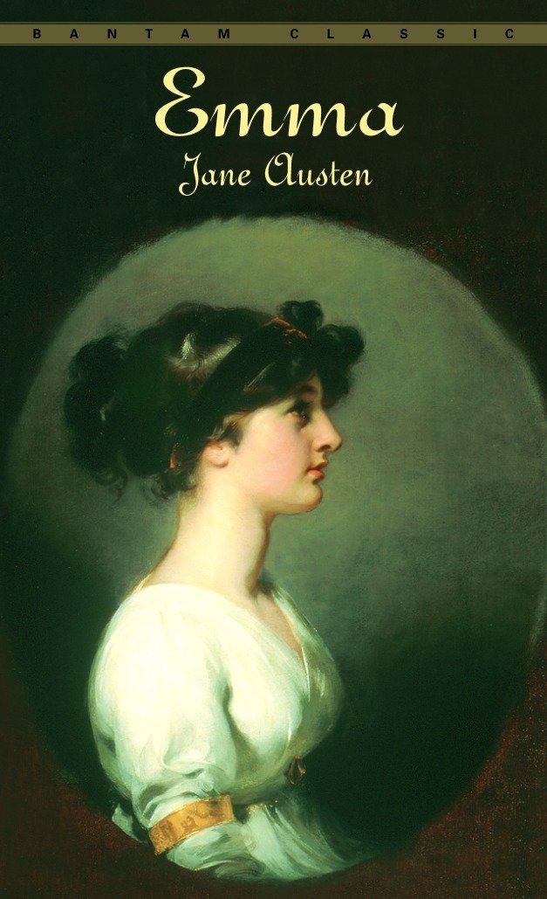

|  |
Volume OneYouthful Emma Woodhouse, whose long-time governess and friend Miss Taylor has just married Mr. Weston, takes some solace in being left alone with her aging father by claiming that she made the match herself. An old friend of the family, Mr. George Knightley, does not believe her, but in her certainty she decides that she must also marry off the young rector, Mr. Elton. Among her friends and acquaintances in the large and populous village of Highbury, she begins to notice young Harriet Smith, the pretty illegitimate seventeen-year-old who lives at Mrs. Goddard's boarding school. Determining first to improve Harriet, Emma discourages her interest in worthy Robert Martin of Abbey-Mill Farm, declares that Harriet must be from more genteel parents than his, and fixes upon Harriet as Mr. Elton's future wife. In bringing the two together socially, Emma does a drawing of Harriet which Mr. Elton admires and takes off to London to be framed. This appears so promising to Emma that, when Harriet receives a letter of proposal from Robert Martin, Emma discredits him and actually helps Harriet write a letter of refusal in spite of the fact that Mr. Knightley has nothing but respect for Robert. Ensuing events convince Emma that Harriet and Mr. Elton are developing a mutual regard, and she takes pride in the apparent success of her endeavor, at the same time affirming that she herself will never marry. For the Christmas holidays Mr. and Mrs. John Knightley, respectively the brother of George Knightley and the sister of Emma, come from London with their five children to visit the Woodhouses. On December 24, which proves to be a bad day of snow, all of them, including George Knightley and Mr. Elton, go for a dinner with the Westons. There discussion turns to Frank Churchill, Weston's handsome, polished son by a former marriage (Frank had taken his uncle's name upon going to live with him) but a son who has never been seen in Highbury. John Knightley in particular thinks it oddly improper that Frank has not yet called on his newly remarried father, even though Frank lives some distance away in Yorkshire with the Churchills. There have been letters from him, of course, and a pleasant surprise of the dinner party is an announcement that a recent letter says that Frank will be coming for a visit within a fortnight, an announcement that reminds Emma that, if she were ever to marry, Frank would suit her in age, character, and condition. |
|
The snow increases to the point that the visitors feel that they must go if they are to reach home safely. To her consternation Emma finds herself alone with Mr. Elton in the second carriage. But she is disconcerted even more when he begins insistently to declare his love for her and when he is amazed to learn that she thought him in love with Harriet. Emma's refusal of Mr. Elton's offer is firm, but she is indeed worried that he has never thought seriously of Harriet. Her worry and self-criticism continue through the night, mixed with resentment at the impertinence of Mr. Elton's aspirations toward herself. Fortunately for her, during the next few days everyone is confined to home by the weather. On the first good day, the John Knightleys return to London while Mr. Elton informs Mr. Woodhouse in a note that he is leaving for a visit to Bath: It is Emma's unhappy duty to inform Harriet about Mr. Elton and to console her, inwardly blaming herself for being in error. In addition to this disappointment in her plans, she learns that Frank Churchill has once again had to defer his visit because Mrs. Churchill is ill, a condition that many of Highbury doubt. George Knightley in particular questions Frank's real sense of duty toward Mr. Weston and, in a conversation with Emma, indicates that he does not share Highbury's (and Emma's) general tendency to think highly of the young man whom the town has never yet seen. Volume TwoThough Miss Bates, as a harmless but compulsive talker, is disagreeable in Emma's eyes, Emma pays a duty call to her and Mrs. Bates and learns that Miss Bates' orphan niece Jane Fairfax will arrive next week for a two-months visit. Jane upon arrival is elegant, accomplished, and reserved, and Emma does not like her — likes her even less, in fact, when she learns that Jane and Frank Churchill had met at Weymouth. George Knightley is about to tell Emma some news when Miss Bates and Jane arrive to announce that Mr. Elton, still in Bath, has become engaged to Augusta Hawkins there. Later Harriet comes to say that she has encountered Robert Martin and his sister at Ford's shop downtown, but Emma takes her mind off it by relating the news about Mr. Elton. Frank Churchill finally arrives and is very agreeable and lively. From the time of his first visit to the Woodhouses, it is evident that Mr. and Mrs. Weston would like to make a match between him and Emma; but the call is ended by his going off to see the Bateses and Jane Fairfax. On subsequent meetings Emma is won over by Frank, and in their discussion of Jane and her reserve Frank perfectly agrees with Emma. Faith in him is shaken when he runs off to London just to get a haircut, but he returns unabashed and continues to sparkle. At a party given by the Coles, Frank sits attentively beside Emma. Jane, it is learned, has received a new pianoforte. When Emma hints that Mr. Dixon, the husband of Jane's friend in Ireland, sent it, Frank politely agrees. Because of some impromptu dancing at the Coles, Emma and Frank later plan a dance at the Crown Inn, but everything is overthrown when Frank has to leave owing to Mrs. Churchill's illness. Before going, Frank visits the Bateses and then the Woodhouses, leaving Emma pretty well convinced that he is in love with her, though she can picture herself only as refusing him. Emma now thinks she is in love with Frank, but his letters to Mrs. Weston make Emma think also that she can do without him. Meanwhile her attention is taken up with Harriet and the arrival of Mrs. Augusta Elton, who has ease without elegance, is vain and overly talkative, and proves to be an insufferable organizer and "manager." Mr. Knightley shows such respect for Jane Fairfax that Emma thinks he may be falling in love, but he declares that he would never ask her to marry him. At a dinner which Emma dutifully gives for the Eltons, Jane discloses that she always fetches the mail from the post office, and Mrs. Elton insists upon coming to her general relief by finding a situation as governess for her. But Jane, who is now to stay longer with the Bateses than originally intended, says that she does not wish anything attempted at the present. In the midst of things, Mr. Weston arrives with the news that Frank will be with them again soon because on doctor's orders Mrs. Churchill must come to London for a stay in May. Volume ThreeBy the time Frank Churchill returns, Emma realizes that there is no attachment on her part. The ball at the Crown Inn now takes place. When Harriet proves to have no dancing partner and Mr. Elton obviously slights her, George Knightley, who has not danced before, gallantly leads her to the set and afterward even dances with Emma. The next day Frank rescues Harriet from some gypsies, and Emma thinks she sees something developing between them but decides not to interfere: It will be a mere passive scheme. Harriet indicates that she is interested in someone above her, and Emma is sure that it is Frank. During a gathering at which they play a word game, Frank shoves words at Jane which make George Knightley suspect that the two are involved, but Emma will not believe him. In June a strawberry party is held at Donwell Abbey, George Knightley's estate. Emma observes George and Harriet walking together. Frank does not arrive; Jane Fairfax leaves early to walk home; and finally Frank arrives in agitation, not at all his usual smooth self. The next day on an exploring party to Box Hill, Emma and Frank flirt; Jane appears bothered; and Emma is rude to Miss Bates. When Emma goes to make amends the next morning, she learns that Jane has accepted a position as governess and will be leaving soon. Frank too has to leave, but immediately, for Mrs. Churchill is ill and, in fact, soon dies. Emma feels sorry for Jane's having to take a position, but her attentions are repulsed. Ten days later the Westons receive a brief letter from Frank in which he explains that he and Jane have been engaged since their being together at Weymouth; Mr. Churchill now gives his consent. It turns out that Harriet has not been thinking of Frank at all but rather of George Knightley. When Emma learns this, she is awakened to the fact that Mr. Knightley must marry no one but herself and she wishes that she had never seen Harriet and had let her marry Robert Martin. Knightley returns from a business trip, learns the news, and commiserates with Emma, who assures him that she has never been captivated by Frank. The revelation leads Knightley to declare his own feelings for Emma, and they become engaged, though Emma knows that they cannot marry as long as she has to take care of her father, for she cannot leave him and he will not leave his home. A very reasonable letter from Frank to Mrs. Weston explains satisfactorily his conduct at Highbury and his and Jane's need for secrecy. Emma is relieved, but she cannot set her mind at rest about Harriet, who now goes to visit the John Knightleys in London. Emma and Jane become reconciled as friends; George Knightley decides that, since Emma cannot leave her father, he will live with them; then it takes the combined persuasive forces of Emma, Knightley, and the Westons to get Mr. Woodhouse to agree to the marriage. When Harriet decides to marry Robert Martin after all, Emma feels free enough that, after some small delaying tactics by Mr. Woodhouse, she and George Knightley are wed in "perfect happiness." |
|